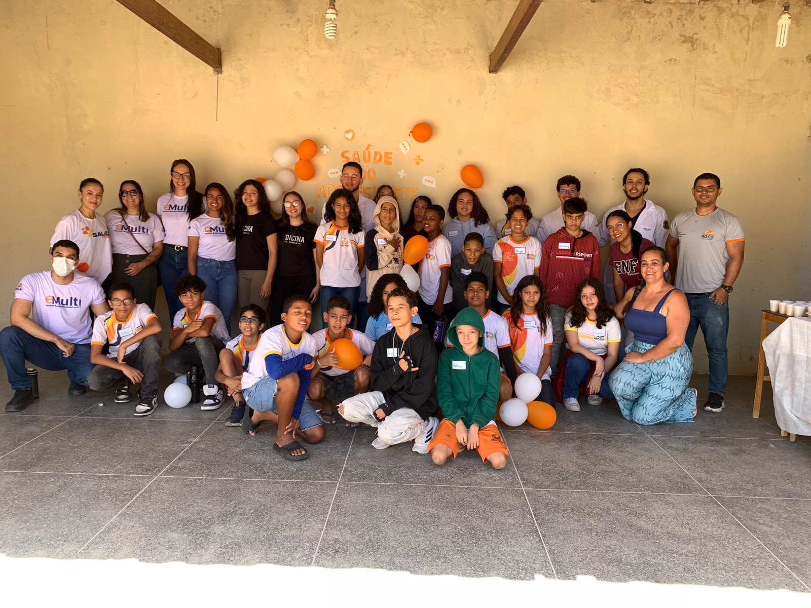
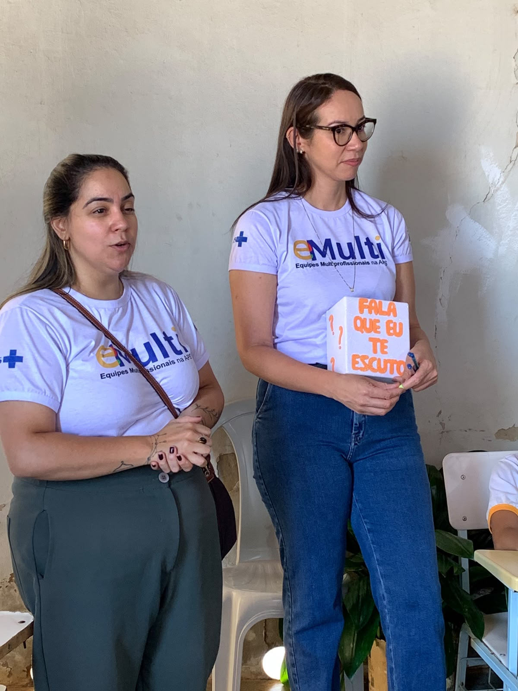
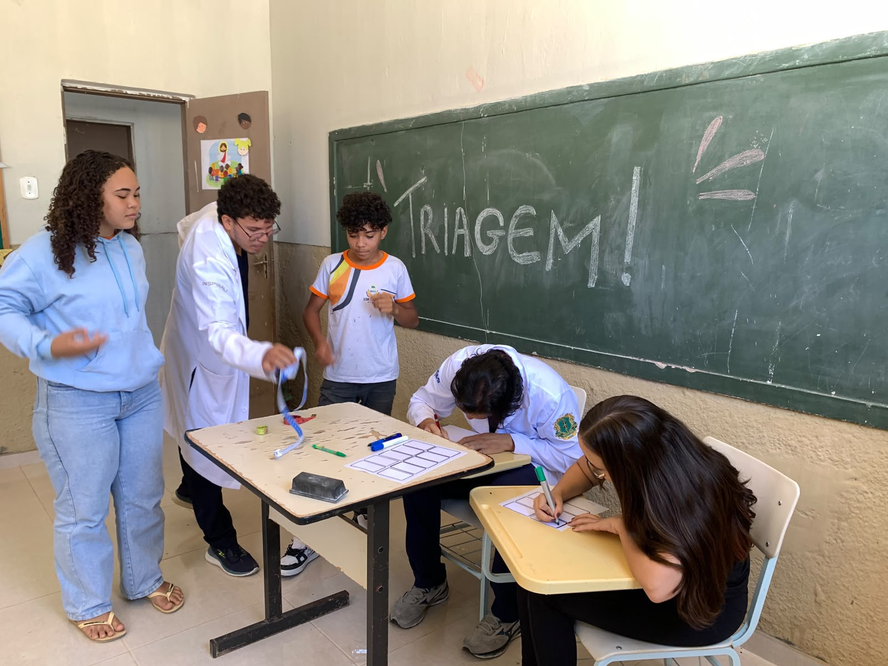

Procure a unidade
Procure a UBS Dr. Sinzal Cezar Vasconcelos, no bairro São Francisco, em Irecê – Bahia.
Crescer traz um mundo de perguntas. A UBS pode ajudar você a encontrar respostas com escuta, respeito e cuidado.
Descubra por onde começar ↗
Do corpo às emoções, tem espaço para falar de tudo. Clique em um assunto para saber mais.

Ansiedade, tristeza, bullying, conflitos em casa ou na escola. Se algo está pesando, conversar pode ser o primeiro passo.

A escola é um espaço para conversar, fazer perguntas e aprender sobre o cuidado com a saúde.
As fotos registram momentos de participação e troca. Você também pode levar suas dúvidas para a equipe da UBS.
Conheça a unidade ↗Mesmo sem saber qual profissional procurar, você pode começar pedindo orientação à equipe.
Procure a UBS Dr. Sinzal Cezar Vasconcelos, no bairro São Francisco, em Irecê – Bahia.
Pode ser uma dúvida, sintoma ou algo que você está sentindo.
O agendamento de consultas é presencial na UBSF. Procure a recepção de segunda a sexta, das 8:00 às 12:00 e das 13:00 às 17:00.
Se tiver, leve documento, Cartão SUS, caderneta de vacinação e exames anteriores. Confirme as orientações locais.
Adolescentes podem ser acolhidos mesmo desacompanhados. O atendimento tem sigilo profissional, com exceções de proteção e obrigações legais que devem ser explicadas.
A equipe considera as necessidades e particularidades de cada caso.
Você merece escuta, informação compreensível e atendimento sem discriminação.
Em risco imediato à vida, ligue SAMU 192 ou procure uma emergência. Após possível exposição ao HIV, procure atendimento o quanto antes e em até 72 horas.